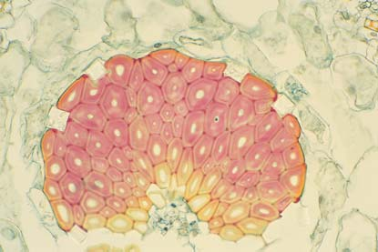

33 Estructura, crecimiento y desarrollo vegetal
708
Dedalera, una herbácea bianual. Las dedaleras ( Digitalis purpurea ) son populares plantas de jardín. La dedalera también es la fuente de digitalina, que se usa para tratar enfermedades cardiacas.
© Organica/Alamy
M
ás de 300,000 especies de plantas con fl ores que viven y están adaptadas a muchos ambientes sobre la Tierra representan una gran variedad. Aunque todas ellas (desde los cactus del desierto con tallos enormemente hinchados, las espadañas parcialmente sumergidas en las ciénagas, hasta las orquídeas que crecen en las ramas más altas de los árboles de las exuberantes pluviselvas) son reconocibles como plantas. Casi todas las plantas tienen el mismo plan corporal básico, que consiste en raíces, tallos y hojas. Las plantas son herbáceas o leñosas. Las plantas herbáceas no son leñosas. En los climas templados, las partes aéreas (tallos y hojas) de las plantas herbáceas se marchitan hasta el suelo al fi nal de la época de reproducción. En contraste, las partes aéreas de las plantas leñosas (árboles y arbustos) persisten. En términos botánicos, las plantas leñosas producen duros tejidos secundarios lignifi cados (las paredes celulares de los tejidos
CONCEPTOS CLAVE
33.1 La estructura de las células, tejidos y órganos de las plantas coinciden con sus funciones. El cuerpo vascular de la planta se diferencia en tres sistemas tisulares: el sistema fundamental, el sistema vascular y el sistema epidérmico. 33.2 Los meristemas primarios alargan las raíces y brotes a lo largo de la vida de la mayoría de las plantas. Las plantas leñosas tienen meristemas tanto primarios como secundarios, lo que aumenta el grosor de raíces y brotes. 33.3 El desarrollo de la planta no sólo requiere división celular y expansión, sino también determinación celular y diferenciación celular, y formación de patrones y morfogénesis.
Estructura, crecimiento y desarrollo vegetal 709
secundarios contienen lignina ), y las plantas herbáceas no lo hacen. La lignina y la producción de tejidos secundarios se estudian más adelante en este capítulo y en los capítulos 35 y 36. Las plantas anuales son herbáceas (como el maíz, los geranios y las caléndulas) que crecen, se reproducen y mueren en un año o menos. Otras plantas herbáceas (como zanahorias, espuma de mar, col y dedalera) son bianuales : tardan dos años en completar su ciclo de vida antes de morir (vea fotografía). Durante su primera temporada, las bianuales producen carbohidratos adicionales, que almacenan y usan durante su segundo año, cuando generalmente forman fl ores y se reproducen. Las perennes son plantas herbáceas y leñosas que tienen el potencial de vivir durante más de dos años. En climas templados, los tallos aéreos (sobre tierra) de las herbáceas perennes como lirios, ruibarbo, cebolla y espárrago se marchitan cada invierno. Sus partes subterráneas (raíces y tallos bajo tierra) quedan latentes durante el invierno y crecen nuevamente cada primavera. (En latencia , un organismo reduce su estado metabólico a un nivel mínimo para sobrevivir a condiciones desfavorables). De igual modo, en ciertos climas tropicales con pronunciadas estaciones húmeda y seca, las partes aéreas de las herbáceas perennes se marchitan, y las partes subterráneas quedan latentes durante la temporada seca desfavorable. Otras plantas tropicales, como las orquídeas, son herbáceas perennes que crecen todo el año. Todas las planas leñosas son perennes y algunas de ellas viven durante cientos o incluso miles de años. En climas templados, los tallos aéreos de las plantas leñosas quedan latentes durante el invierno. Muchas leñosas templadas perennes son deciduas ; esto es: se desprenden de sus hojas antes del invierno y producen nuevos brotes con nuevas hojas la primavera siguiente. Otras leñosas perennes son siempre verdes y se desprenden de sus hojas durante un largo período, de modo que algunas hojas siempre están presentes. Puesto que tienen tallos leñosos permanentes que son el punto de partida de los nuevos brotes de la siguiente estación, muchos árboles alcanzan tamaños enormes. En este capítulo el enfoque está sobre la estructura, crecimiento y desarrollo de las plantas con fl ores, que son plantas vasculares caracterizadas por fl ores, doble fecundación, endospermo y semillas encerradas dentro de frutos (vea el capítulo 28). Después, en los capítulos del 34 al 38, se examinarán otros aspectos de las plantas con fl ores.
33.1 EL CUERPO DE LA PLANTA
OBJETIVOS DE APRENDIZAJE
1 Discutir las funciones de varias partes del cuerpo vascular de la planta, incluido el sistema de raíces (radicular) que absorbe agua y nutrientes, y el sistema de brotes fotosintéticos. 2 Describir la estructura y funciones del sistema de tejidos fundamentales (parénquima, colénquima y esclerénquima). 3 Describir la estructura y funciones del sistema de tejidos vasculares (xilema y fl oema). 4 Describir la estructura y funciones del sistema de tejido epidérmico (epidermis y peridermis).
El cuerpo de las plantas con fl ores (y otras plantas vasculares) generalmente se organiza en un sistema de raíces y un sistema de brotes
( FIGURA 33-1 ). El sistema de raíces (radicular) usualmente es subterráneo. La porción aérea, el sistema de brotes , por lo general consiste en un tallo vertical que tiene hojas y, en las plantas con fl ores, fl ores y frutos que contienen semillas. Cada planta por lo común crece en dos ambientes diferentes: el suelo húmedo oscuro y el aire iluminado relativamente seco. Por lo general, las plantas tienen tanto raíces como brotes, porque requieren recursos de ambos ambientes. Por ende, las raíces se ramifi can de modo amplio a través del suelo y forman una red que ancla la planta fi rmemente en su lugar y absorben agua y minerales disueltos (nutrientes inorgánicos). Las hojas, los órganos aplanados de la fotosíntesis, están unidos de manera más o menos regular sobre el tallo, donde absorben la luz solar y el dióxido de carbono atmosférico (CO 2 ) que usan en la fotosíntesis.
El cuerpo de la planta consiste en células y tejidos
Como en otros organismos, la unidad estructural y funcional básica de las plantas es la célula. Las plantas evolucionaron varios tipos de células, cada una especializada para funciones particulares. Las células de las plantas están organizadas en tejidos. Un tejido es un grupo de células que forma una unidad estructural y funcional. Los tejidos simples están compuestos sólo de un tipo de célula, mientras que los tejidos complejos tienen dos o más tipos de células. En las plantas vasculares, los tejidos están organizados en tres sistemas de tejidos, cada uno de los cuales se extiende a lo largo del cuerpo de la planta ( FIGURA 33-2 ). Cada sistema tisular contiene dos o más tipos de tejidos ( TABLA 33-1 ). La mayor parte del cuerpo de la planta está compuesto del sistema fundamental , que tiene varias funciones, incluidas fotosíntesis, almacenamiento y sostén. El sistema vascular , un intrincado sistema de conducción que se extiende a lo largo del cuerpo de la planta, es responsable de la conducción de varias sustancias, incluidos agua, minerales disueltos y alimento (azúcar disuelta). El sistema vascular también funciona para fortalecer y dar sostén a la planta. El sistema epidérmico brinda una cubierta al cuerpo de la planta. Raíces, tallos, hojas, partes fl orales y frutos son órganos , porque cada uno está compuesto de los tres sistemas de tejidos. Los sistemas de tejidos de diferentes órganos vegetales forman una red interconectada a lo largo de la planta. Por ejemplo, el sistema vascular de una hoja es continuo con el sistema vascular del tallo al que está unida, y el sistema vascular del tallo es continuo con el sistema vascular de la raíz.
El sistema fundamental está compuesto de tres tejidos simples
La mayor parte de una planta herbácea es su sistema fundamental, que está compuesto de tres tejidos: parénquima, colénquima y esclerénquima ( TABLA 33-2 de las páginas 712 y 713). Estos tejidos pueden distinguirse por la estructura de sus paredes celulares. Recuerde que las células vegetales están rodeadas por una pared celular que brinda apoyo estructural (vea el capítulo 4). La célula de una planta que crece segrega una delgada pared celular primaria , que se estira y expande conforme la célula aumenta de tamaño. Después de que la célula deja de crecer, en ocasiones segrega una gruesa y fuerte pared celular secundaria , que se deposita adentro de la pared celular primaria; esto es: entre la pared celular primaria y la membrana plasmática (vea la fi gura 4-31). Las paredes celulares vegetales tienen muchos papeles importantes. Como estudiará más adelante en este capítulo, las paredes celulares están involucradas en el crecimiento; la capacidad de expansión de las paredes ce-
710 Capítulo 33
Las células de parénquima tienen paredes primarias delgadas
El tejido parénquima , un tejido simple compuesto de células de parenquimatosa, se encuentra a lo largo del cuerpo de la planta y es el tipo más común de célula y tejido ( FIGURA 33-3a de la página 714). Las partes blandas de una planta, como la parte comestible de una manzana o una papa, consisten principalmente de parénquima.
lulares primarias permite a las células aumentar su tamaño. Los científi cos están cada vez más conscientes de que, en las paredes celulares de la planta, tiene lugar las señales de transducción, porque muchas moléculas de carbohidrato y proteína en las paredes celulares de la planta se comunican con otras moléculas tanto adentro como afuera de la célula. La pared celular también es la primera línea de defensa contra organismos patógenos.
Durante la evolución de las plantas, los sistemas radiculares y de brotes se especializaron para obtener recursos del suelo y el aire, respectivamente.
Fruto en desarrollo
Yema axilar
Flor
Peciolo Hoja
Lámina
Tallo
Sistema de brotes
Sistema radicular (de raíz)
Internodo (área entre nodos adyacentes)
Raíz principal
Raíces ramificadas
Roseta de hojas basales
Nodos (áreas de unión de hojas y yemas axilares)
Antera de estambre
Estigma de pistilo
Ovario de pistilo (consiste en dos carpelos)
Pétalo Sépalo
FIGURA 33-1 Animada El cuerpo de la planta El cuerpo de una planta consiste en un sistema radicular, por lo general bajo tierra, y un sistema de brotes, comúnmente aéreo. Aquí se muestra una arabidopsis ( Arabidopsis thaliana ), una pequeña planta de la familia de la mostaza que es una planta modelo para investigación biológica.
La Arabidopsis es nativa del norte de África y Eurasia y se naturalizó (se introdujo y ahora crece silvestre) en California y la mitad oriental de Estados Unidos.
PUNTO CLAVE

Los sistemas de tejidos son continuos a lo largo de la planta. Por ejemplo, el sistema vascular en una hoja es continuo con el sistema vascular en el tallo al que está unida.
Sistema epidérmico
Sistema vascular
Sistema fundamental
Sistema epidérmico
Sistema vascular
Sistema fundamental
Sistema epidérmico
Sistema vascular
Sistema fundamental
Hoja
Tallo
Raíz
FIGURA 33-2 Animada Los tres sistemas tisulares en el cuerpo de la planta Esta fi gura muestra la distribución de los sistemas fundamental, vascular y epidérmico en una eudicotiledónea herbácea como Arabidopsis .
PUNTO CLAVE
Sistemas tisulares, tejidos y tipos de célula de las plantas con fl ores
Sistema tisular Tejido Tipos de células Principales funciones de los tejidos
Sistema fundamental Parénquima Colénquima Esclerénquima
Células parenquimatosas Células colenquimatosas Células esclerenquimatosas (esclereidas o fi bras)
Almacenamiento, secreción, fotosíntesis Sostén Sostén, reforzamiento
Sistema vascular Xilema Traqueidas Elementos de vaso Células parenquimatosas de xilema Fibras (células esclerenquimatosas)
Conducción de agua y minerales nutrientes, sostén Conducción de agua y minerales nutrientes, sostén Almacenamiento Sostén, reforzamiento
Floema Elementos de tubo criboso Células acompañantes
Células parenquimatosas de fl oema Fibras (células esclerenquimatosas)
Conducción de azúcar en disolución, sostén Puede controlar el funcionamiento de los tubos cribosos y cargar azúcar en los tubos cribosos Almacenamiento Sostén, reforzamiento
Sistema epidérmico Epidermis Células epidérmicas
Células guardián Tricomas
Cubierta protectora sobre la superfi cie del cuerpo de la planta Regula estomas Funciones variable
Peridermis Células corcho Células de cámbium de corcho Células de parénquima de corcho
Cubierta protectora sobre la superfi cie del cuerpo de la planta. Meristemáticas (forma nuevas células) Almacenamiento
TABLA 33-1
712 Capítulo 33
Tipos de célula en el sistema fundamental
Núcleo
Pared celular
Vacuola pigmentada
Phil Gates/Biological Photo Service
Célula parenquimatosa
Descripción Viviente, metabolismo activo; delgadas paredes celulares primarias
Funciones Almacenamiento; secreción y/o fotosíntesis
Ubicación y comentarios A lo largo del cuerpo de la planta; se muestra una MO de un pelo de estambre de una fl or de Tradescantia virginiana ; observe las grandes vacuolas pigmentadas; el núcleo no está dentro de la vacuola, pues se encuentra encima de ella
Pared celular Cloroplastos
Vacuola
Cengage
Célula parenquimatosa
Descripción Viviente, metabolismo activo; delgadas paredes celulares primarias
Funciones Almacenamiento; secreción; fotosíntesis
Ubicación y comentarios A lo largo del cuerpo de la planta; se muestra una MO de células de hoja de una planta acuática ( Elodea ); observe los muchos cloroplastos en la delgada capa de citoplasma que rodea la gran vacuola transparente
Espacios intercelulares
Granos de almidón
Pared celular
Cengage
Célula parenquimatosa
Descripción Viviente, metabolismo activo; delgadas paredes celulares primarias
Funciones Almacenamiento; secreción; fotosíntesis
Ubicación y comentarios A lo largo del cuerpo de la planta; se muestra una MO de una sección transversal de parte de una raíz de una Ranunculus ; observe los granos de almidón que llenan las células.
Paredes celulares primarias engrosadas en las esquinas
Ed Reschke/Peter Arnold, Inc.
Célula colenquimatosa
Descripción Viviente; paredes celulares primarias con grosor desigual
Función Soporte elástico
Ubicación y comentarios Justo abajo de la epidermis del tallo; se muestra una MO de una sección transversal de un tallo de baya ( Sambucus ); observe las paredes celulares con grosor desigual que son especialmente gruesas en las esquinas, lo que hace que el contenido de la célula asuma una forma redondeada en sección transversal
( continúa )
TABLA 33-2
Estructura, crecimiento y desarrollo vegetal 713
( FIGURA 33-3b ). El sostén es crucial para las plantas, en parte porque les permite crecer hacia arriba para competir con otras plantas por la luz solar disponible en un área atestada de plantas. Las plantas carecen del sistema esquelético óseo usual de muchos animales; en vez de ello, células individuales, incluidas las células colenquimatosas, sostienen el cuerpo de la planta. Las células colenquimatosas, que usualmente son alargadas, están vivas en la madurez. Sus paredes celulares primarias tienen grosores desiguales y son especialmente gruesas en las esquinas. La colénquima se encuentra de manera uniforme a lo largo de la planta y con frecuencia se presenta como largas hebras cerca de las superfi cies del tallo y a lo largo de las nervaduras de las hojas. Las “cadenas” en los tallos de apio, por ejemplo, consisten en tejido colenquimatoso.
Las células esclerenquimatosas tienen tanto paredes primarias como gruesas paredes secundarias
Otro tejido vegetal simple especializado para sostén estructural es la esclerénquima , cuyas células tienen paredes celulares tanto primarias como secundarias. La raíz de la palabra esclerénquima se deriva de la palabra griega sclero , que signifi ca “duro”. Las paredes celulares secundarias de las células esclerenquimatosas se vuelven fuertes y duras debido al grosor extremo. Los extremos puntiagudos , que son diminutas áreas donde no se desarrollan paredes secundarias, permiten un intercambio de sustancias entre células esclerenquimatosas vivientes adyacentes. Las células esclerenquimatosas maduras no pueden estirarse o alargarse.
Las células de parénquima realizan varias funciones importantes, como fotosíntesis, almacenamiento y secreción. Las células parenquimatosas que funcionan en la fotosíntesis contienen cloroplastos verdes, mientras que las células parenquimatosas no fotosintéticas carecen de cloroplastos y con frecuencia son incoloras. Los materiales almacenados en las células parenquimatosas incluyen granos de almidón, gotas de aceite, agua y sales, que en ocasiones son visibles como cristales. Resinas, taninos, hormonas, enzimas y néctar azucarado son ejemplos de sustancias que pueden segregar las células parenquimatosas. Las diversas funciones del parénquima requieren que las células parenquimatosas estén vivas y metabólicamente activas. Las células parenquimatosas tienen la capacidad de diferenciarse en otros tipos de células, en particular cuando una planta está lesionada. Si células de xilema (conductoras de agua) se cortan, por ejemplo, las células parenquimatosas adyacentes pueden dividirse y diferenciarse en nuevas células de xilema en pocos días. (Recuerde del capítulo 17 que es posible inducir a ciertas células vegetales para convertirse en el equivalente de células de tallo embrionario que luego pueden diferenciarse en células especializadas).
Las células colenquimatosas tienen paredes primarias con grosor desigual
El tejido de colénquima , un tejido vegetal simple compuesto de células colenquimatosas, es un tejido estructural extremadamente fl exible que brinda gran parte del sostén en los órganos vegetales blandos no leñosos
Tipos de célula en el sistema fundamental (continuación)
Núcleo Paredes celulares secundarias Citoplasma Extremos puntiagudos
James Mauseth, University of Texas
Esclereida (célula esclerenquimatosa)
Descripción Puede estar viva o muerta en la madurez; gruesas paredes celulares secundarias; carece de pared secundaria en los extremos puntiagudos
Funciones Reforzamiento; tejido rico en esclereida que es duro e infl exible
Ubicación y comentarios Conchas de nueces y cocos; extremos puntiagudos de cerezas y duraznos; se muestra una MO de esclereidas vivas en una sección a través de la punta de una cereza ( Prunus avium ).
Gruesas paredes celulares secundarias
Lumen donde estaba el protoplasto cuando las células estaban vivas
James Mauseth, University of Texas
Fibra (célula esclerenquimatosa)
Descripción Con frecuencia muertas en la madurez; gruesas paredes celulares secundarias; menos puntiagudos que en esclereidas
Funciones Sostén; brindan reforzamiento
Ubicación y comentarios A lo largo del cuerpo de la planta; común en tallos y ciertas hojas; se muestra una MO de una sección transversal a través de un cúmulo de fi bras de una hoja de pita ( Agave )
TABLA 33-2

714 Capítulo 33
miles de subunidades de glucosa unidas para formar una cadena plana con forma de listón. De 40 a 70 de estas cadenas yacen paralelas unas con otras y se conectan mediante enlaces hidrógeno para formar una microfi brilla de celulosa , una fuerte hebra diminuta visible bajo el microscopio electrónico (vea la fi gura 3-10a). Las microfi brillas de celulosa están unidas por una matriz de hemicelulosa y pectina. La hemicelulosa es un grupo de polisacáridos que son más solubles que la celulosa. Las hemicelulosas varían en su composición química de una especie a otra. Algunas hemicelulosas están compuestas de xiloglucano , que consiste en una estructura de moléculas de b -1,4-glucosa a las que se unen cadenas de xilosa , un azúcar de cinco carbonos. A pesar de su nombre, la estructura química de la hemicelulosa es signifi cativamente diferente de la que tiene la celulosa. La pectina , otro polisacárido de unión, es menos variable en su composición monómera que las hemicelulosas. Las unidades de monómero de pectina son ácido a -galacturónico , una molécula de seis carbonos que es un derivado de la glucosa. Un importante componente de las paredes celulares secundarias vegetales, en particular de la madera, es la lignina . Componente de hasta el 35% del peso seco de la pared celular secundaria, la lignina es un polímero fortalecedor constituido por monómeros derivados de ciertos aminoácidos. Los científi cos todavía no determinan la estructura química exacta de la lignina porque es difícil de remover de la celulosa y de otros materiales de pared celular a los que se enlaza de manera covalente. Después de estudiar los cuatro componentes principales de las paredes celulares vegetales, ahora es posible generalizar en torno a la química celular de las células de parénquima, colénquima y esclerénquima. Las delgadas paredes celulares primarias de las células parenquimatosas contienen predominantemente celulosa, aunque también contienen hemicelulosa y pectina. Tanto las células de parénquima como las de colénquima tienen paredes celulares primarias, pero sus paredes son químicamente distintas debido a que las áreas engrosadas de las paredes de colénquima contienen grandes cantidades de pectina además de celulosa y hemicelulosa. Las gruesas paredes celulares de las células de esclerénquima son químicamente diferentes porque son ricas en lignina, además de celulosa, hemicelulosa y pectina.
El tejido vascular consiste en dos tejidos complejos
El sistema vascular , que está incrustado en el tejido fundamental, transporta los materiales necesarios a lo largo de la planta por medio de dos tejidos complejos: xilema y fl oema ( TABLA 33-3 ). Tanto xilema como
Con frecuencia, en la madurez funcional, cuando el esclerénquima brinda sostén al cuerpo de la planta, sus células mueren. La esclerénquima puede localizarse en varias áreas del cuerpo de la planta. Dos tipos de células esclerenquimatosas son esclereidas y fi bras. Las esclereidas son células de forma variable comunes en las conchas de nueces y en los huesos de frutos como cerezas y duraznos. La textura ligeramente arenosa de las peras resulta de la presencia de cúmulos de esclereidas. Las fi bras , que son células largas ahusadas que con frecuencia se presentan en parches o grupos, son particularmente abundantes en la madera, corteza interior y venas de la hoja de las plantas con fl ores ( FIGURA 33-3c ).
Las células de los tres tejidos simples varían en la química de su pared celular
Las células de parénquima, colénquima y esclerénquima pueden distinguirse por la química de sus paredes celulares. Las paredes celulares pueden contener celulosa, hemicelulosa, pectina y lignina. La celulosa , el polímero más abundante del mundo, representa alrededor del 40% al 60% del peso seco de las paredes celulares vegetales. Como se estudió en el capítulo 3, la celulosa es un polisacárido compuesto de unidades de glucosa unidas por enlaces b -1,4. Cada molécula de celulosa consiste en
Espacio intercelular
Vacuola Núcleo Citoplasma Pared celular
Células parenquimatosas. Las células de parénquima varían en tamaño y estructura, dependiendo de sus varias funciones dentro del cuerpo de la planta.
Células de colénquima en sección longitudinal ( izquierda ) y sección transversal. Observe las células alargadas, evidentes en la sección longitudinal, y las paredes celulares con grosor desigual, evidentes en la sección transversal.
Células de esclerénquima ( fibras ) en sección longitudinal ( izquierda ) y sección transversal. Las fibras maduras con frecuencia mueren en la madurez funcional y por lo tanto carecen de núcleos y citoplasma; el lumen es el espacio anteriormente ocupado por la célula viva.
Esquina engrosada de pared celular
Núcleo Citoplasma Vacuola
Lumen
Pared celular
FIGURA 33-3 Tipos de célula: parénquima, colénquima y esclerénquima
Estructura, crecimiento y desarrollo vegetal 715
Tipos de célula seleccionados en el sistema vascular
Traqueidas
Extremos puntiagudos
John D. Cunningham/Visuals Unlimited
Traqueidas
Descripción Mueren en la madurez; carecen de pared secundaria en los extremos puntiagudos
Funciones Conducción de agua y minerales nutrientes; sostén
Ubicación y comentarios Ocurre en cúmulos en xilema a lo largo del cuerpo de la planta; se muestra una MO de una sección longitudinal de traqueidas de madera de pino blanco ( Pinus strobus )
Fibras
Elemento de vaso punteado con numerosos extremos puntiagudos
Perforación
Elemento de vaso punteado con numerosos extremos puntiagudos
James Mauseth, University of Texas
Elemento de vaso
Descripción Mueren en la madurez; paredes terminales con perforaciones; carecen de pared secundaria en los extremos puntiagudos
Funciones Conducción de agua y minerales nutrientes; sostén
Ubicación y comentarios Xilema a lo largo del cuerpo vegetal; los elementos de vaso son más efi cientes que las traqueidas en la conducción; se muestra una MO de una sección longitudinal de dos elementos de vaso de un eudicotiledóneo leñoso no identifi cado
J. Robert Waaland/Biological Photo Service
50 μ m
Elementos de tubo criboso
Placa cribosa
Célula acompañante
Célula acompañante
Descripción Viviente; tiene conexiones citoplasmáticas con los tubos cribosos
Función Ayuda a mover azúcares hacia y desde los tubos cribosos
Ubicación y comentarios Floema a lo largo del cuerpo vegetal; se muestra una MO de fl oema del peciolo (tallo de hoja) de una calabaza ( Cucurbita ) en sección transversal.
TABLA 33-3
vaso hacia el siguiente. Una pila de elementos de vaso, llamada vaso , recuerda una tubería de agua en miniatura. Los elementos de vaso también tienen extremos puntiagudos en sus paredes laterales que permiten el transporte lateral (movimientos laterales) del agua desde un vaso a otro.
Los elementos de tubo criboso son las células conductoras del fl oema
El fl oema conduce materiales alimenticios, esto es: carbohidratos formados en la fotosíntesis, a lo largo de la planta y brinda sostén estructural. En las plantas con fl ores, el fl oema es un tejido complejo compuesto de cuatro tipos de células: elementos de tubo criboso, células acompañantes, fi bras y células parenquimatosas del fl oema ( FIGURAS 33-4C y 33-4D ). Las fi bras, que por lo general son extensas en el fl oema de las plantas herbáceas, proporcionan sostén estructural adicional al cuerpo de la planta. Los materiales alimenticios se conducen en disolución (esto es: disueltos en agua) a través de los elementos de tubo criboso , que están entre las células vegetales más especializadas. Los elementos de tubo criboso están unidos extremo con extremo para formar largos tubos cribosos . Las paredes terminales de las células, llamadas placas cribosas , tienen una serie de orifi cios a través de los cuales el citoplasma se extiende desde un elemento de tubo criboso hasta el siguiente. Los elementos de tubo criboso están vivos en la madurez, pero muchos de sus organelos, incluidos núcleo, vacuola, mitocondrias y ribosomas, se desintegran o encogen conforme maduran. Los elementos de tubo criboso están entre las pocas células eucariotas que pueden funcionar sin núcleos. Por lo general, estas células viven menos de un año. Sin embargo, existen notables excepciones. Ciertas palmeras tienen elementos de tubo criboso que permanecen vivos durante aproximadamente 100 años. Adyacentes a cada elemento de tubo criboso hay una célula acompañante que ayuda al funcionamiento del elemento de tubo criboso. La
fl oema son continuos a lo largo del cuerpo de la planta. (En el capítulo 35 se estudian los mecanismos de transporte en xilema y fl oema).
Las células de conducción en el xilema son traqueidas y elementos de vaso
El xilema conduce agua y minerales disueltos desde las raíces hacia los tallos y hojas, y proporciona sostén estructural. En las plantas con fl ores, el xilema es un tejido complejo compuesto de cuatro tipos de células: traqueidas, elementos de vaso, células parenquimatosas y fi bras. Dos de los cuatro tipos de células que se encuentran en el xilema, las traqueidas y los elementos de vaso , conducen agua y minerales disueltos. El xilema también contiene fi bras que brindan sostén, y células parenquimatosas, conocidas como parénquima xilemático , que realiza funciones de almacenamiento. Traqueidas y elementos de vaso están enormemente especializados para la conducción. Conforme se desarrollan, ambos tipos de células experimentan apoptosis , o muerte celular programada. Como resultado, traqueidas y elementos de vaso maduros están muertos y por lo tanto huecos; sólo permanecen sus paredes celulares. Las traqueidas, las principales células conductoras de agua en gimnospermas (como el pino) y plantas vasculares con semillas (como los helechos), son células largas ubicadas en parchos o cúmulos ( FIGURA 33-4a ). El agua se conduce hacia arriba, desde las raíces hacia los brotes, y pasa de una traqueida a otra a través de extremos puntiagudos anchos. Además de las traqueidas, las plantas con fl ores poseen elementos de vaso extremadamente efi cientes ( FIGURA 33-4b ). Los diámetros celulares de los elementos de vaso por lo general son más grandes que los de las traqueidas. Los elementos de vaso son huecos, pero, a diferencia de las traqueidas, las paredes terminales tienen orifi cios, conocidos como perforaciones , o están ausentes. Los elementos de vaso están apilados unos sobre otros, y el agua se conduce fácilmente desde un elemento de
Extremos puntiagudos
Pared celular
Lumen
Pared terminal con perforaciones Placa cribosa con poro
Elemento de tubo criboso
Células parenquimatosas del floema
Área cribosa lateral
Plasmodesmos
Célula acompañante
Xilema Floema
Traqueida (célula de xilema). La traqueida está abierta para revelar la apariencia de la célula en sección transversal. En la madurez, las traqueidas usualmente están muertas.
Elemento de vaso (célula de xilema). Las paredes terminales de los elementos de vaso están perforadas. Los elementos de vaso se unen extremo con extremo, desde las raíces hasta las hojas y otras partes de brote.
Elemento de tubo criboso que muestra la placa cribosa. Los elementos de tubo criboso están unidos extremo con extremo para formar tubos cribosos.
Sección longitudinal de tejido de floema. Elementos de tubo criboso, células acompañantes y células parenquimatosas del floema. No se muestran las células de fibra.
FIGURA 33-4 Animada Vistas longitudinales de tipos de célula en tejidos de xilema y fl oema
Estructura, crecimiento y desarrollo vegetal 717
El tejido epidérmico consiste en dos tejidos complejos
El tejido epidérmico , epidermis y peridermis, proporcionan una cubierta protectora sobre las partes de la planta ( TABLA 33-4 ). En las plantas herbáceas, el tejido epidérmico es una sola capa de células llamadas epidermis. Las plantas leñosas inicialmente producen una epidermis, pero se divide como resultado de la producción de tejido leñoso adicio-
célula acompañante es una célula viva, completa con un núcleo. Se cree que este núcleo dirige las actividades tanto de la célula acompañante como del elemento de tubo criboso. Numerosos plasmodesmos [conexiones citoplasmáticas a través de las cuales el citoplasma se extiende desde una célula hasta otra (vea el capítulo 5)] vinculan una célula acompañante con su elemento de tubo criboso adjunto. Las células acompañantes tienen un papel esencial en el movimiento de azúcares hacia los elementos de tubo criboso para transportar hacia otras partes de la planta.
Tipos de células seleccionados en el tejido epidérmico
Colénquima
Epidermis
Cutícula
James Mauseth, University of Texas
Célula epidérmica
Descripción Célula relativamente no especializada con pared primaria delgada; pared exterior con frecuencia más gruesa y cubierta con una capa cerosa no celular (cutícula).
Funciones Cubierta protectora sobre la superfi cie del cuerpo de la planta; ayuda a reducir la pérdida de agua.
Ubicación y comentarios Generalmente la epidermis tiene una célula de grueso; se muestra una MO de una sección transversal a través de la epidermis de un tallo de hidra ( Hedera helix ).
Células guardianes
Célula guardián
Poro de la estoma
Célula epidérmica
Dwight R. Kuhn
Célula guardián
Descripción Célula que se presenta en pares y contiene cloroplastos; el par cambia de forma para abrir y cerrar el poro.
Función Abre y cierra el poro.
Ubicación y comentarios Epidermis de tallos y hojas; se muestra una MO de la epidermis de una hoja de Tradescantia virginiana .
Tricomas
Epidermis
Biophoto Associates
Tricoma
Descripción Pelo u otra excrecencia epidérmica; puede ser unicelular o multicelular; ocurre en varios tamaños y formas.
Funciones. Variadas; absorción; secreción; excreción; protección; reducción de pérdida de agua.
Ubicación y comentarios Epidermis; se muestra un MEB de una hoja de ortiga ( Solanum carolinense ) con tricomas que penetran la piel de los animales e inyectan sustancias irritantes que causan una sensación urticante.
Restos de epidermis
Células de corcho
Cámbium de corcho
Parénquima de corcho
Peridermis
Cengage
Célula de corcho
Descripción Muertas en la madurez; paredes celulares impregnadas con material a prueba de agua (suberina).
Funciones Reduce la pérdida de agua y evita que penetren organismos patógenos.
Ubicación y comentarios Producidas en gran cantidad; con frecuencia el corcho se forma justo abajo de la epidermis; sustituye la epidermis en tallos y raíces más viejos; se muestra una MO de una sección transversal a través de la peridermis de un tallo de geranio ( Pelargonium ).
TABLA 33-4

718 Capítulo 33
mas son poros diminutos en la epidermis que están rodeados por dos células llamadas células guardianes (vea la fi gura 34-5). Muchos gases, incluidos CO 2 , oxígeno y vapor de agua, pasan a través de las estomas mediante difusión. Las estomas por lo general están abiertas durante el día, cuando ocurre la fotosíntesis, y la pérdida de agua que también tiene lugar cuando las estomas están abiertas proporciona cierto enfriamiento por evaporación. Durante la noche, las estomas generalmente están cerradas. En condiciones de sequía, la necesidad de conservar agua supera a la necesidad de enfriar las hojas e intercambiar gases. En consecuencia, durante una sequía, las estomas se cierran durante el día. En el capítulo 34 se estudian con mayor detalle las estomas. La epidermis también contiene excrecencias especiales, o pelos, llamados tricomas , que se presentan en muchos tamaños y formas y tienen varias funciones. Las plantas que toleran los ambientes salados, como en las playas, con frecuencia tienen tricomas especializados sobre sus hojas para remover el exceso de sal que se acumula en la planta. La presencia de tricomas en las partes aéreas de las plantas del desierto puede aumentar la refl exión de la luz desde las plantas, lo que en consecuencia enfría los tejidos internos y reduce la pérdida de agua. Otros tricomas tienen una función protectora. Por ejemplo, los tricomas en las hojas y tallos de la ortiga urticante contienen sustancias irritantes que pueden desalentar a los animales herbívoros de comer la planta. Los pelos radicales son tricomas simples no ramifi cados que aumentan el área superfi cial de la epidermis radicular (que entra en contacto con el suelo) para absorción más efectiva de agua y minerales.
La peridermis sustituye la epidermis en las plantas leñosas
La peridermis , un tejido que puede estar en cualquier parte entre varias a muchas capas celulares de grosor, se forma bajo la epidermis para ofrecer una nueva cubierta protectora conforme la epidermis se destruye. A medida que una planta leñosa sigue aumentando en circunferencia, muda su epidermis y expone la peridermis, la cual forma la corteza exterior de los tallos y raíces más viejos. Es un tejido complejo compuesto principalmente de células de corcho y células parenquimatosas de corcho. Las células de corcho mueren en la madurez, y sus paredes sumamente cubiertas con una sustancia a prueba de agua llamada suberina , que ayuda a reducir la pérdida de agua. Las células parenquimatosas de corcho funcionan principalmente en almacenamiento. En los capítulos 35 y 36 se estudia más acerca de la peridermis.
Repaso
■ ¿Cuáles son algunas de las funciones de las raíces? ¿Y de los brotes?
■ ¿Cuáles son los tres sistemas tisulares en las plantas? Describa las funciones de cada uno.
■ ¿Cómo difi eren los tejidos de parénquima, colénquima y esclerénquima en estructura y función celulares?
■ ¿Cuáles son las funciones de xilema y fl oema? Describa las células conductoras que se presentan en cada uno de estos tejidos complejos.
■ ¿En qué se parecen epidermis y peridermis? ¿En qué son diferentes?
33.2 MERISTEMAS VEGETALES
OBJETIVOS DE APRENDIZAJE
5 Enunciar cómo difi ere el crecimiento en las plantas del crecimiento en los animales. 6 Distinguir entre crecimiento primario y secundario. 7 Distinguir entre meristema apical y meristema lateral.
nal dentro de la epidermis conforme la planta aumenta en circunferencia. La peridermis, que sustituye la epidermis en los tallos y raíces de las plantas leñosas más viejas, compone la corteza exterior.
La epidermis es la capa más externa de una planta herbácea
La epidermis es un tejido complejo compuesto sobre todo de células vivas relativamente no especializadas. Dispersas entre estas células hay células oclusivas más especializadas y excrecencias llamadas tricomas (se estudian más adelante). En la mayoría de las plantas, la epidermis consiste en una sola capa de células aplanadas ( FIGURA 33-5 ). Las células epidérmicas usualmente no contienen cloroplastos y por lo tanto son transparentes, de modo que la luz puede penetrar los tejidos interiores de tallos y hojas. Tanto en tallos como en hojas, los tejidos fotosintéticos se encuentran abajo de la epidermis. Un importante requisito de las partes aéreas (tallos, hojas, fl ores y frutos) de una planta es la capacidad para controlar la pérdida de agua. Las células epidérmicas de las partes aéreas segregan una cutícula cerosa sobre la superfi cie de sus paredes exteriores; esta capa cerosa restringe enormemente la pérdida de agua de las superfi cies vegetales. Aunque la cutícula es en extremo efi ciente para evitar más pérdida de agua a través de las células epidérmicas, también lentifi ca la difusión de CO 2 , necesario para la fotosíntesis, desde la atmósfera hacia la hoja o el tallo. La difusión de CO 2 se facilita mediante estomas . Los esto-
Pared celular
Citoplasma Vacuola
Núcleo
FIGURA 33-5 Tipos de célula: células epidérmicas Células epidérmicas de tres plantas diferentes. Observe que, sin importar la forma de la célula, las células epidérmicas encajan fi rmemente entre ellas.

Estructura, crecimiento y desarrollo vegetal 719
Un ápice de brote (como la yema terminal) es muy diferente en apariencia de una punta de raíz ( FIGURA 33-7 ). Un domo de diminutas células meristemáticas ordenadas regularmente, el meristema apical de brote, se ubica en cada ápice de brote. Los primordios foliares (hojas en desarrollo) y los primordios de yema (yemas en desarrollo) surgen a partir del meristema apical de brote. Los diminutos primordios foliares cubren y protegen el meristema apical de brote. Conforme las células formadas por el meristema apical de brote se alargan, el meristema apical de brote se empuja hacia arriba. Posteriores divisiones celulares producen tejido de tallo adicional y hacen que aparezcan nuevos primordios foliares y de yema. Más lejos de la punta del tallo, las células inmaduras se diferencia en los tres sistemas de tejidos del cuerpo vegetal maduro.
El crecimiento secundario tiene lugar en meristemas laterales
Árboles y arbustos experimentan crecimiento tanto primario como secundario. Estas plantas aumentan en longitud mediante crecimiento primario y aumentan en circunferencia mediante crecimiento secundario. El aumento en circunferencia, que ocurre en áreas que ya no se alargan, se debe a divisiones celulares que tienen lugar en meristemas laterales , áreas que se extienden a todo lo largo de los tallos y raíces, excepto en las puntas. Dos meristemas laterales, el cámbium vascular y el cámbium de corcho, son responsables del crecimiento secundario, que es la formación de tejidos secundarios: xilema secundario, fl oema secundario y peridermis ( FIGURA 33-8 ). El cámbium vascular es una capa de células meristemáticas que forman un largo cilindro continuo y delgado dentro de tallo y raíz. Se
Una diferencia entre plantas y animales es la ubicación del crecimiento. Cuando las plantas crecen, sus células sólo se dividen en áreas específi cas, llamadas meristemas , que están compuestas de células cuya función principal es formar nuevas células mediante división mitótica. (En contraste, cuando un animal joven crece, todas las partes de su cuerpo crecen, aunque no necesariamente a la misma tasa). Las células meristemáticas, también conocidas como células madre, no se diferencian. En vez de ello, retienen la capacidad para dividirse por mitosis, un rasgo que pierden muchas células diferenciadas. La persistencia de meristemas con actividad mitótica signifi ca que las plantas, a diferencia de la mayoría de los animales, pueden crecer durante toda su vida. Esta capacidad de raíces y tallos para crecer a lo largo de la vida de una planta se conoce como crecimiento indeterminado . En contraste, muchas hojas y fl ores tienen crecimiento determinado ; esto es: dejan de crecer después de alcanzar cierto tamaño. El tamaño de las hojas y fl ores con crecimiento determinado varía de especie a especie y de individuo a individuo, y depende de la programación genética de la planta y de condiciones ambientales como la disponibilidad de luz solar, agua y minerales esenciales. En las plantas pueden ocurrir dos tipos de crecimiento meristemático. El crecimiento primario es un aumento en longitud del tallo y la raíz. Todas las plantas tienen crecimiento primario, que produce todo el cuerpo vegetal en las plantas herbáceas y los brotes y raíces blandos juveniles en los árboles y arbustos leñosos. El crecimiento secundario es un aumento en la circunferencia de una planta. Por lo general, sólo gimnospermas y eudicotiledóneas leñosas tienen crecimiento secundario. (Las eudicotiledóneas leñosas incluyen árboles y arbustos como roble, higuera, fresno, cerezo, manzano, haya y arce). Los tejidos producidos por el crecimiento secundario abarcan madera y corteza, que constituyen la mayor parte del volumen de árboles y arbustos. Algunas anuales (geranio y girasol, por ejemplo) experimentan crecimiento secundario limitado a pesar del hecho de que carecen de tejidos obvios de madera y corteza.
El crecimiento primario tiene lugar en meristemas apicales
El crecimiento primario ocurre como resultado de la actividad de meristemas apicales , áreas ubicadas en las puntas de raíces y brotes, incluidos dentro de las yemas de los tallos. Las yemas son brotes embrionarios latentes que a la larga se desarrollan hasta ser ramas. El crecimiento primario es evidente cuando examina la punta de una raíz ( FIGURA 33-6 ). Una capa protectora de células llamada caliptra cubre la punta de la raíz. Directamente detrás de la caliptra está el meristema apical radicular, que consiste en células meristemáticas. Las células meristemáticas, que tienen forma de cubo, siguen siendo pequeñas porque se dividen de manera continua. (En los meristemas, conforme las células hijas comienzan a alargarse, una o ambas se dividirán nuevamente). Más lejos de la punta de la raíz, justo detrás del área de división celular, hay un área de alargamiento celular donde las células se desplazaron del meristema. Aquí las células ya no se dividen, sino que, en vez de ello, se vuelven más largas, y empujan la punta de la raíz alejándola de ellas, cada vez más profundo en el suelo. También comienza cierta diferenciación en el área de alargamiento celular, y tejidos inmaduros como xilema y fl oema en diferenciación se vuelven evidentes. Los sistemas tisulares continúan su desarrollo y diferenciación en tejidos primarios (epidermis, xilema, fl oema y tejidos fundamentales) de la planta adulta. Más lejos de la punta, detrás del área de alargamiento celular, la mayoría de las células se diferenciaron completamente y están por completo maduras. En esta área son evidentes pelos radicales.
Pelos radicales
Raíz ramificada
Área de alargamiento celular
Meristema apical (área de división celular)
Caliptra
Área de maduración celular
Cengage
FIGURA 33-6 Animada Punta de raíz El meristema apical radicular (donde las células se dividen y por lo tanto aumentan en número) está protegido por una caliptra o cofi a. Más lejos de la punta hay un área de alargamiento celular donde las células se alargan y comienzan a diferenciarse. El área de maduración celular tiene células diferenciadas completamente maduras. Observe los pelos radicales jóvenes en esta área y en la raíz de una plántula de rábano joven ( Raphanus sativus ), que mide aproximadamente 5 cm de largo ( izquierda ).
720 Capítulo 33
todos los tejidos vegetales ubicados afuera del cámbium vascular. La corteza tiene dos regiones, una corteza interior viva compuesta de fl oema secundario y una corteza exterior principalmente muerta compuesta de peridermis. Los capítulos 35 y 36 presentan una discusión más abarcadora del crecimiento secundario.
Repaso
■ ¿Cuál es el papel de los meristemas vegetales? ¿El crecimiento animal involucra meristemas?
■ ¿Qué es crecimiento primario? ¿Crecimiento secundario?
■ ¿Qué son los meristemas apicales? ¿Los meristemas laterales?
33.3 DESARROLLO DE FORMA
OBJETIVOS DE APRENDIZAJE
8 Distinguir entre división celular y expansión celular, y describir los papeles de la banda de preprofase y las microfi brillas de celulosa. 9 Describir la relación entre determinación celular y diferenciación celular, y entre formación de patrón y morfogénesis. 10 Explicar por qué el organismo modelo Arabidopsis es tan útil en el estudio del desarrollo vegetal.
Las plantas son organismos dinámicos que crecen. El desarrollo en las plantas abarca todos los cambios que tienen lugar durante toda la vida de un individuo. De particular interés en la biología del desarrollo es el proceso mediante el cual las células se especializan y organizan en un organismo complejo. Por ejemplo, ¿cómo un cigoto unicelular microscópico da lugar a un embrión multicelular en una semilla? (Consulte las etapas de desarrollo embrionario en una eudicotiledónea típica en la fi gura 37-8.) ¿Cómo el embrión en la semilla da origen a las hojas, tallos y raíces de una planta juvenil , y cuáles mecanismos subyacen a la transición de una planta juvenil no reproductora a una planta adulta capaz de fl orecer ( FIGURA 33-9 )? Ahora examinará varios aspectos del desarrollo vegetal que afectan la forma de las plantas. El fl orecimiento se estudia en otras partes de este libro (consulte el modelo ABC del capítulo 17).
ubica entre la madera y la corteza de una planta leñosa. La división de las células del cámbium vascular agrega más células a la madera (xilema secundario) y la corteza interior (fl oema secundario). El cámbium de corcho , ubicado en la corteza exterior, está compuesto de un delgado cilindro o arreglo irregular de células meristemáticas. Las células del cámbium de corcho se dividen y forman células de corcho hacia el exterior y una o más capas subyacente de células de parénquima de corcho que funcionan en el almacenamiento. De manera colectiva, las células de corcho, el cámbium de corcho y el parénquima de corcho constituyen la peridermis. Ahora está listo para una defi nición más precisa de corteza . La corteza , la cubierta más externa sobre los tallos y raíces leñosos, consiste en
Hoja más vieja
Coleus
Meristema apical
Hoja más vieja
Primordio de yema
Tricoma
Primordios foliares
100 μ m
James Mauseth, University of Texas
FIGURA 33-7 Ápice de brote MO de una sección longitudinal a través de un ápice de brote de Coleus , que muestra el meristema apical de brote, primordios foliares y primordios de yema.
Corteza exterior (peridermis)
Corteza interior (floema secundario)
Madera (xilema secundario) Corteza Cámbium vascular
FIGURA 33-8 Crecimiento secundario El cámbium vascular, una delgada capa de células entre la madera y la corteza, produce los tejidos vasculares secundarios: la madera, que es xilema secundario, y la corteza interior, que es fl oema secundario. El cámbium de corcho produce la peridermis, el tejido de corteza exterior que sustituye la epidermis en una planta con crecimiento secundario.
Estructura, crecimiento y desarrollo vegetal 721
las células animales, la orientación del huso determina el plano en el que se dividen las células, y no hay banda de preprofase.
La orientación de las microfi brillas de celulosa afecta la dirección de la expansión celular
En las plantas, el crecimiento ocurre tanto en aumento en el número de células como en aumento en el tamaño celular. La división celular y la expansión celular (también llamada elongación ) están gobernadas por un programa genético que interactúa con señales ambientales de los ambientes externo e interno. En el crecimiento, una célula vegetal recientemente formada absorbe agua en su vacuola por ósmosis. El agua aumenta la presión de turgencia de la célula, la presión hidrostática que se desarrolla dentro de una célula con pared y presiona hacia afuera contra la membrana plasmática. La presión de turgencia proporciona una fuerza que ejerce presión sobre la pared celular y hace que se expanda. En una célula de raíz de cebolla, la vacuola aumenta de tamaño en 30 a 150 veces durante la elongación. En el tejido en crecimiento, el orden de las microfi brillas de celulosa en la pared evita que la célula se expanda igualmente en todas direccio-
El plano y la simetría de la división celular afectan la forma de la planta
Ya se vio que el crecimiento de la planta se localiza en los meristemas para la división celular. En estos sitios las células experimentan división celular en una forma ordenada. Por ejemplo, en el meristema apical radicular de la cebolla, hileras de células pueden remontarse a la región de meristema ( FIGURA 33-10 ). Estas células se dividen en el mismo plano para producir cada hilera de células. Las divisiones celulares en un plano, dos planos o más ayudan a establecer los patrones tisulares que se producirán durante el desarrollo. ¿Cómo se determina el plano de división celular para una célula meristemática particular? En las células vegetales, un denso arreglo de microtúbulos forma una banda de preprofase justo adentro de la membrana plasmática, y envuelve al núcleo en forma muy parecida a un cinturón. (El capítulo 4 contiene una discusión de la naturaleza dinámica de los microtúbulos). La banda de preprofase aparece justo antes de la mitosis y determina el plano en el que se dividirá la célula ( FIGURA
33-11 ). La banda de preprofase, que se ubica donde se formará la placa celular después de la mitosis y la citocinesis, también ayuda a orientar el huso mitótico. La banda de preprofase es una característica vegetal; en
- Plántula (b) Planta juvenil (no reproductiva) (c) Planta adulta (reproductiva)
Meristema apical de brote
5 mm
250 mm El brote foliar deriva del meristema apical de brote
El sistema radicular deriva del meristema apical radicular Meristema apical radicular
FIGURA 33-9 Crecimiento de una plántula de Arabidopsis hasta ser una planta adulta Casi todos los tejidos diferenciados formados después de que germina una semilla (con frecuencia referido como crecimiento postembrionario) provienen de un pequeño número de células madre en los meristemas apicales de raíz y brotes.
722 Capítulo 33
rrollo. En varios momentos ciertas células se especializan bioquímica y estructuralmente para realizar funciones específi cas a través de un proceso conocido como diferenciación celular . En general, una célula animal diferenciada está comprometida de manera irreversible a su destino, pero éste no es el caso con las plantas. Como se estudió anteriormente en el capítulo, las células de parénquima pueden diferenciarse en otros tipos de células, por ejemplo, cuando el cuerpo de la planta está lesionado. La diferenciación celular ocurre a través de determinación celular , una serie de eventos moleculares en los que las actividades de ciertos genes se alteran de tal forma que hacen que una célula se comprometa progresivamente a una ruta de diferenciación particular. Conforme avanza la determinación celular, el destino de una célula joven se vuelve cada vez más limitado, lo que restringe su desarrollo a un conjunto limitado de tipos de tejido.
nes debido a la presión de turgencia. Cuando las microfi brillas en la pared celular se orientan en la misma dirección, la pared se expande perpen dicularmente hacia ellas ( FIGURA 33-12 ).
La diferenciación celular depende en parte de la ubicación de una célula
Por ellas mismas, la división celular y la expansión celular producirían sólo un grupo amorfo de células similares. El desarrollo de la forma vegetal es resultado de una combinación equilibrada de varios procesos fundamentales que van más allá de la división celular y de la expansión celular: diferenciación celular y determinación celular, y formación de patrón y morfogénesis. Conforme avanza el crecimiento, la división celular produce un aumento en número de células, que sirven como los pilares del desa-
Células de una sola hilera
División celular en el mismo plano que el anterior
Plano de división celular
Máxima tasa de división celular
Zona meristemática
3
2 Dos células se convierten en tres
1 Una célula se convierte en dos
- Las células que se dividen en el mismo plano forman una fila, o hilera, de células. (b) Se destaca una sola hilera de células en la punta de la raíz de cebolla. Si observa de cerca, puede ver muchas otras hileras.
© Pan Xunbin/Schutterstock
200 μ m
FIGURA 33-10 El plano de división celular y la punta de la raíz de cebolla El meristemo apical radicular mantiene el crecimiento de raíz postembrionario.


Estructura, crecimiento y desarrollo vegetal 723
a responder muchas preguntas fundamentales acerca del crecimiento y el desarrollo en las plantas. Estas técnicas también tienen gran potencial práctico. Con cultivo de tejidos, los investigadores pueden regenerar muchas plantas idénticas desde el punto de vista genético a partir de células de una sola planta genéticamente superior. Muchos tipos de plantas, desde orquídeas y violetas africanas hasta espadañas costeras, se han cultivado de esta forma.
La morfogénesis ocurre a través de la formación de patrón
La diferenciación celular en sí misma no explica la forma vegetal global. Las células diferenciadas deben volverse cada vez más organizadas, y dar forma al intrincado patrón de tejidos y órganos que caracterizan una planta multicelular. Este desarrollo de forma, en la que células diferenciadas en ubicaciones específi cas se organizan espacialmente en estructuras reconocibles, se conoce como morfogénesis . La morfogénesis procede mediante el proceso de formación de patrón , una serie de pasos que requieren señalización entre células, cambios en las formas y metabolismo de ciertas células, e interacciones celulares precisas. La formación de patrón organiza a las células en estructuras tridimensionales ( FIGURA 33-13 ). Dependiendo de su ubicación, las células se exponen a diferentes concentraciones de moléculas señalizadoras que especifi can la información posicional ; esto es, el lugar en la que se ubica la célula en relación con el eje del cuerpo. Esta información afecta la diferenciación celular y la formación de tejidos. En consecuencia, el dónde se ubique una célula dada con frecuencia determina en qué se convertirá cuando madure.
Mutantes de Arabidopsis ofrecen información crucial acerca del desarrollo vegetal
Hasta fi nales de 1970, los biólogos sabían poco acerca de cómo interactúan los genes para controlar el desarrollo. Sin embargo, los rápidos avances en la biología molecular condujeron a los científi cos a buscar mutantes del desarrollo y a aplicar técnicas elaboradas para estudiarlos.
Durante la diferenciación celular la apariencia física de una célula puede o no cambiar en forma signifi cativa. No obstante, cuando la determinación celular está completa, una célula se vuelve estructural y funcionalmente reconocible (como célula epidérmica, por ejemplo) y su patrón de actividad genética difi ere de la de otros tipos de células. Por ende, las células diferenciadas del cuerpo vegetal tienen expresión genética diferencial , esto es: diferentes genes están activos en distintas células al mismo tiempo. La expresión genética diferencial es responsable de variaciones en química, comportamiento y estructura entre células.
Los cultivos de tejido involucran expresión genética diferencial
Las células pueden aislarse de ciertas plantas y crecer en un medio nutritivo estéril químicamente defi nido. En los primeros experimentos con dichos cultivos, las células vegetales podían mantenerse vivas, pero no se dividían. Más tarde los investigadores descubrieron que, al agregar ciertos materiales naturales, como el endosperma líquido del coco, también conocido como leche de coco, se inducía la división celular en el cultivo. Hacia fi nales de la década de 1950, células vegetales de varias fuentes podían cultivarse con éxito, y dividirse para producir una masa de células desorganizadas relativamente indiferenciadas, o callos . En 1958, F. C. Steward, fi siólogo vegetal en Cornell University, tuvo éxito al generar toda una planta de zanahoria a partir de una sola célula de callo derivada de una raíz de zanahoria (vea la fi gura 17-2). Esto demostró que cada célula vegetal contiene una huella genética para todas las características de un organismo completo. Su trabajo también demostró que toda una planta puede reproducirse a partir de una sola célula, siempre que la expresión genética diferencial ocurra de modo que los genes adecuados se expresen en los momentos adecuados. Desde la obra pionera de Steward, los biólogos han cultivado exitosamente muchas plantas con el uso de varias fuentes celulares. Las plantas se regeneran a partir de diferentes tejidos, explantes orgánicos (órganos extirpados o partes como meristemas apicales radiculares), y células individuales. Las técnicas de cultivo de células y tejidos ayudan
La banda de preprofase le hace un círculo al núcleo e indica el plano de la próxima división celular.
FIGURA 33-11 Banda de preprofase
Microfibrillas de celulosa
Núcleo
Vacuolas coalescentes Vacuola engrandecida alargada
FIGURA 33-12 Animada Dirección de la expansión celular Al seguir la división celular, los microtúbulos de la celulosa se depositan en las nuevas paredes celulares de manera ordenada a fi n de permitir la expansión celular. La orientación de las microfi brillas de la celulosa determina la dirección de la expansión celular. Observe que la mayoría de las microfi brillas de la celulosa están orientadas en forma transversal en esta fi gura, lo cual da por resultado una expansión celular longitudinal.


724 Capítulo 33
Repaso
■ ¿Cuál proceso usualmente ocurre primero: diferenciación celular o expansión celular?
■ ¿Cuáles son algunos tipos de eventos que contribuyen a la formación de patrón?
■ ¿Cómo la formación de patrón conduce a la morfogénesis?
■ ¿Por qué Arabidopsis es un organismo modelo útil para el desarrollo vegetal?
(Un mutante es un individuo con un fenotipo anormal causado por la mutación en un gen). Los biólogos ahora estudian cómo los genes se activan, inactivan y modifi can para controlar el desarrollo. A la larga, los científi cos esperan alcanzar una gran meta de los sistemas biológicos: comprender cómo una sola célula (un óvulo fecundado) se desarrolla hasta ser una planta multicelular. Usted recordará del capítulo 17 que la arabidopsis ( Arabidopsis thaliana ) es el organismo más ampliamente usado para estudiar el control genético del desarrollo en las plantas. Cuando los biólogos insertan genes extraños clonados en células de Arabidopsis , los genes se integran en los cromosomas y se expresan. Luego los investigadores inducen a estas células transformadas para que se diferencien en plantas transgénicas. Los botánicos usan mutágenos químicos para producir cepas mutantes y han aislado muchos mutantes de desarrollo de Arabidopsis . Considere el gen monopteros ( mp ) que codifi ca el factor de transcripción que afecta la formación de patrón apical-basal y el desarrollo de tejidos vasculares. Las plántulas mutantes para mp carecen de estructuras basales, incluida una raíz primaria ( FIGURA 33-14 ). Tales fenotipos mutantes ayudan a los científi cos a identifi car los genes esenciales para el desarrollo normal. También de Arabidopsis se ha secuenciado su genoma relativamente pequeño, de alrededor de 26,700 genes. El éxito del proyecto de secuenciación de Arabidopsis condujo a una iniciativa internacional de biólogos vegetales para entender las funciones de todos los genes en el genoma de Arabidopsis ( TABLA 33-5 ). Esta información genómica funcional conducirá a una comprensión más profunda del desarrollo y la historia evolutiva de las plantas.
Ejemplos de formas de hoja.
Ejemplos de márgenes de hoja.
FIGURA 33-13 Variación de hoja y formación de patrón Las hojas son muy variables en forma, existen docenas de diferentes formas y márgenes de hoja. Las hojas en las plantas juveniles con frecuencia tienen una forma diferente a la de las plantas adultas, y algunas plantas adultas tienen muchas formas de hoja en el mismo individuo. La formación de patrón, que está bajo control genético, es la principal responsable de la variación de las hojas. (Vea también la fi gura 34-2 para más ejemplos de variación en hojas).
T. Berleth/G. Jurgens
FIGURA 33-14 Mutación de monopteros en Arabidopsis thaliana El gen monopteros afecta el desarrollo del sistema radicular. La plántula de tipo silvestre ( izquierda ) tiene un gen monopteros normal, mientras que la mutante ( derecha ) carece de estructuras basales.
Estructura, crecimiento y desarrollo vegetal 725
Funciones genéticas conocidas en el genoma de Arabidopsis
Función Porcentaje de genoma
Metabolismo ADN/ARN 1
Transducción de señal 2
Desarrollo 2
Metabolismo energético 3
División celular 3
Transporte 4
Transcripción 4
Respuesta al ambiente 4
Metabolismo de proteínas 7
Otros procesos biológicos 11
Otros procesos celulares 17
Otras funciones metabólicas 18
Funciones desconocidas 24
Fuente: The Arabidopsis Information Resource, 2007.
TABLA 33-5
© Nigel Cattlin/Alamy
33.1 (página 709)
1 Discutir las funciones de varias partes del cuerpo vascular de la planta, incluido el sistema de raíces (radicular) que absorbe agua y nutrientes, y el sistema de brotes fotosintéticos.
■ El cuerpo vegetal vascular usualmente consiste en un sistema de raíces y un sistema de brotes. El sistema radicular generalmente es subterráneo y obtiene agua y minerales disueltos para la planta. Las raíces también sostienen fi rmemente la planta en su lugar.
■ El sistema de brotes generalmente es aéreo y obtiene luz solar e intercambia gases como CO 2 , oxígeno y vapor de agua. El sistema de brotes consiste en un tallo vertical que tiene hojas y estructuras reproductivas. Las yemas , brotes embrionarios no desarrollados, crecen en los tallos.
Aprenda más acerca del cuerpo vegetal al hacer clic sobre la fi gura en CengageNOW.
2 Describir la estructura y funciones del sistema de tejidos fundamentales (parénquima, colénquima y esclerénquima).
■ El sistema fundamental consiste en tres tejidos con varias funciones. El parénquima está compuesto de células parenquimatosas vivas que tienen delgadas paredes celulares primarias . Las funciones del tejido parenquimatoso incluyen fotosíntesis, almacenamiento y secreción.
■ El colénquima consiste en células colenquimatosas con paredes celulares primarias de grosor desigual. Este tejido brinda sostén estructural fl exible.
■ La esclerénquima está compuesta de células esclerenquimatosas ( esclereidas o fi bras ). Las células esclerenquimatosas con frecuencia mueren en la madurez pero brindan sostén estructural.
Aprenda más acerca de las células de parénquima, colénquima y esclerénquima al hacer clic sobre la fi gura en CengageNOW.
3 Describir la estructura y funciones del sistema de tejidos vasculares (xilema y fl oema).
■ El sistema vascular conduce materiales a través del cuerpo de la planta y proporciona fortaleza y sostén.
■ El xilema es un tejido complejo que conduce agua y minerales disueltos. Las verdaderas células conductoras de xilema son traqueidas y elementos de vaso .
■ El fl oema es un tejido complejo que conduce azúcar en disolución. Los elementos de tubo criboso son las células conductoras de fl oema; son auxiliadas por células acompañantes .
Aprenda más acerca del xilema y el fl oema al hacer clic sobre la fi gura en CengageNOW.
4 Describir la estructura y funciones del sistema de tejido epidérmico (epidermis y peridermis).
■ El tejido epidérmico es la cubierta protectora exterior del cuerpo vegetal.
■ ■ RESUMEN: ENFOQUE EN LOS OBJETIVOS DE APRENDIZAJE
726 Capítulo 33
■ El crecimiento ocurre tanto por división celular (un aumento en el número de células) como por expansión celular (aumento en tamaño de la célula).
■ En las células vegetales, un denso arreglo de microtúbulos forma una banda de preprofase justo adentro de la membrana plasmática. La banda de preprofase aparece justo antes de la mitosis y determina el plano donde se dividirá la célula.
■ La absorción de agua en la vacuola de una célula aumenta la presión de turgencia , lo que ejerce presión sobre la pared celular. El ordenamiento de microfi brillas de celulosa en la pared evita que ésta se expanda de igual manera en todas direcciones. Cuando las microfi brillas se orientan de la misma forma, la pared se expande perpendicular a la orientación microfi brilar. 9 Describir la relación entre determinación celular y diferenciación celular, y entre formación de patrón y morfogénesis.
■ En la diferenciación celular , las células se especializan bioquímica y estructuralmente para realizar funciones específi cas. La diferenciación celular ocurre mediante determinación celular , una serie de eventos moleculares en los que las actividades de ciertos genes se alteran en formas que hacen que una célula se dedique progresivamente a una ruta de diferenciación particular.
■ El desarrollo de forma, en el que las células diferenciadas en ubicaciones específi cas se organizan espacialmente en estructuras reconocibles, se conoce como morfogénesis . La morfogénesis procede mediante el proceso de determinación celular , una serie de pasos que requiere señalización entre células, cambios en las formas y metabolismo de ciertas células y precisas interacciones celulares. 10 Explicar por qué el organismo modelo Arabidopsis es tan útil en el estudio del desarrollo vegetal.
■ Los botánicos aislaron muchos mutantes de desarrollo de Arabidopsis . Tales fenotipos mutantes ayudaron a los científi cos a identifi car genes esenciales para el desarrollo normal. El genoma de Arabidopsis fue secuenciado, y los biólogos vegetales actualmente determinan las funciones de todos los genes de esta planta.
■ La epidermis es un tejido complejo que cubre el cuerpo de la planta herbácea. La epidermis que cubre las partes aéreas segrega una cutícula cerosa que reduce pérdida de agua. Las estomas permiten el intercambio de gases entre el interior del sistema de brotes y la atmósfera circundante. Los tricomas son excrecencias, o pelos, que ocurren en muchos tamaños y formas y tienen varias funciones.
■ El peridermis es un tejido complejo que cubre el cuerpo de la planta en las plantas leñosas.
33.2 (página 718)
5 Enunciar cómo difi ere el crecimiento en las plantas del crecimiento en los animales.
■ El crecimiento en las plantas, a diferencia de los animales, se ubica en regiones específi cas llamadas meristemas . El meristema está compuesto de células cuya función primaria es formar células nuevas mediante división mitótica. 6 Distinguir entre crecimiento primario y secundario.
■ El crecimiento primario es un aumento en longitud del tallo o raíz. El crecimiento primario ocurre en todas las plantas.
Vea el desarrollo de raíz y brotes al hacer clic sobre las fi guras en CengageNOW.
■ El crecimiento secundario es un aumento en circunferencia (grosor) de tallo o raíz. El crecimiento secundario usualmente ocurre en largos cilindros de células merismáticas a lo largo de los tallos y raíces más viejos.
Aprenda más acerca del crecimiento secundario al hacer clic sobre las fi guras en CengageNOW.
7 Distinguir entre meristema apical y meristema lateral.
■ El crecimiento primario resulta de la actividad de meristemas apicales que se ubican en las puntas de las raíces y brotes y dentro de las yemas de los tallos.
■ Los dos meristemas laterales responsables del crecimiento secundario son el cámbium vascular y el cámbium de corcho .
33.3 (página 720)
8 Distinguir entre división celular y expansión celular, y describir los papeles de la banda de preprofase y las microfi brillas de celulosa.
La mayor parte del cuerpo de la planta consiste en el sistema de tejido ____________. (a) fundamental (b) vascular (c) peridermis (d) epidérmica (e) corteza
Las paredes celulares de las células de parénquima (a) contienen grandes cantidades de pectina en las esquinas engrosadas (b) son ricas en lignina pero no contienen hemicelulosa y pectina (c) son predominantemente celulosa, aunque también contienen hemicelulosa y pectina (d) contienen celulosa, hemicelulosas y lignina en cantidades aproximadamente iguales (e) contiene hemicelulosas, pectina y lignina pero no celulosa
¿Cuál sistema tisular brinda una cubierta para el cuerpo de la planta? (a) fundamental (b) vascular (c) peridermis (d) epidermis (e) corteza
Los dos tejidos simples que se especializan para sostén son (a) parénquima y colénquima (b) colénquima y esclerénquima (c) esclerénquima y parénquima (d) parénquima y xilema (e) xilema y fl oema
Esclereidas y fi bras son ejemplos de, ¿cuál tejido vegetal? (a) parénquima (b) colénquima (c) esclerénquima (d) xilema (e) epidermis
¿Cuál de los siguientes enunciados acerca del sistema vascular no es verdadero? (a) xilema y fl oema son continuos a lo largo del cuerpo de la planta (b) el xilema no sólo conduce agua y minerales disueltos, sino también brinda sostén (c) cuatro tipos de célula se presentan en el fl oema: elementos de tubo criboso, células acompañantes, traqueidas y elementos de vaso (d) los elementos de tubo criboso carecen de núcleos (e) los elementos de vaso son huecos, y sus paredes terminales tienen perforaciones o están completamente disueltas
Diminutos poros conocidos como _________ puntean la superfi cie de la epidermis de hojas y tallos; cada poro está bordeado por dos ______. (a) estomas; células acompañantes (b) estomas; fi bras (c) elementos de tubo criboso; células acompañantes (d) esclereidas; células acompañantes (e) cutícula; células acompañantes
EVALÚE SU COMPRENSIÓN
Estructura, crecimiento y desarrollo vegetal 727
- Etiquete los tres sistemas tisulares en el cuerpo de la planta.
Hoja
Tallo
Raíz
El crecimiento primario, un aumento en la longitud de una planta, ocurre en (a) el cámbium de corcho (b) el meristema apical (c) el cámbium vascular (d) el meristema lateral (e) la peridermis
La banda de preprofase (a) aparece justo antes de la mitosis tanto en las células vegetales como en las animales (b) determina el plano donde se dividirá la célula (c) se adhiere a microfi brillas de celulosa en la pared celular (d) es una parte esencial de la formación de patrón en las plantas (e) aumenta la presión de turgencia de una célula
La diferenciación celular ocurre a través de _________________, mientras que la morfogénesis involucra ______________. (a) formación de patrón; determinación celular (b) división celular; expansión celular (c) expansión celular; formación de patrón (d) determinación celular; división celular (e) determinación celular; formación de patrón
Los monopteros mutantes (a) carecen de una raíz primaria (b) se desarrollan normalmente hasta que la planta se vuelve reproductiva (c) tiene morfogénesis foliar anormal (d) se descubrió en arroz después de que su genoma se secuenció (e) es uno de sólo dos mutantes de desarrollo conocidos en Arabidopsis
Los céspedes tienen una meristema especial situada en la base de las hojas. Relacione esta información con lo que usted sabe acerca del crecimiento del césped después de podarlo.
Una pareja graba un corazón con sus iniciales en un tronco de árbol a 1.20 m sobre el nivel del suelo; el árbol medía 7.60 m en esa época. Veinte años después, el árbol medía 15.20 m de alto. ¿Cuán arriba del suelo se encontraban las iniciales? Explique su respuesta.
La esclerénquima en las plantas es el equivalente funcional del hueso en los humanos (tanto esclerénquima como hueso brindan sostén). Sin embargo, la esclerénquima está muerta, mientras que el hueso es tejido vivo. ¿Cuáles son algunas de las ventajas de una planta que tenga células de sostén muertas? ¿Puede pensar en alguna desventaja? Explique su respuesta.
VÍNCULO CON LA EVOLUCIÓN. Las plantas con fl ores tienen tanto traqueidas como elementos de vaso en su xilema. Las coníferas, que evolucionaron más temprano que las plantas con fl ores, sólo tie-
nen traqueidas. ¿Estas diferencias en la estructura del xilema ayudan a explicar la diferencia en el éxito de estos dos grupos de plantas? Explique su respuesta.
Los biólogos vegetales actualmente trabajan para identifi car aquellos genes de Arabidopsis con funciones desconocidas (vea la tabla 33-5). Si a usted se le pide determinar la función de un gen particular, ¿cómo abordaría esta tarea?
CIENCIA, TECNOLOGÍA Y SOCIEDAD. ¿Por qué es importante el conocimiento obtenido por la secuenciación del genoma de Arabidopsis , aun cuando dicha planta no tenga valor comercial?
Preguntas adicionales están disponibles en CengageNOW en www.cengage.com/login.
PENSAMIENTO CRÍTICO